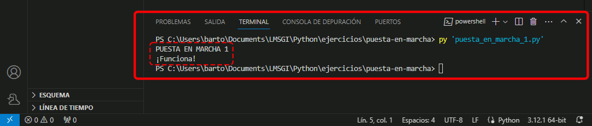
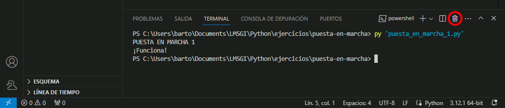
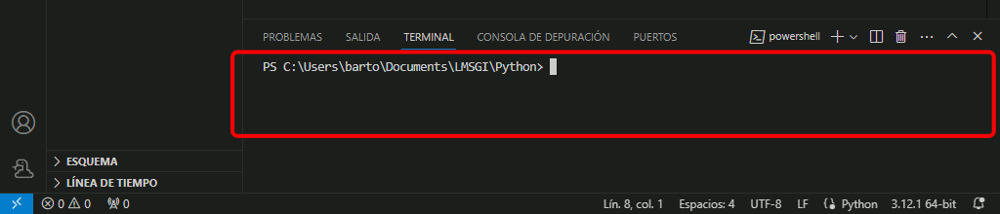
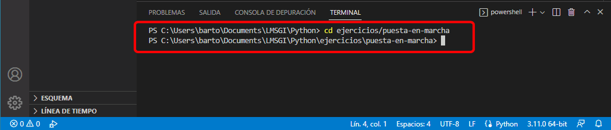

Descargue las plantillas y descomprímalas en la carpeta Python/ejercicios.
Abra Visual Studio Code eligiendo como área de trabajo la carpeta Python, de acuerdo con la lección Configuración recomendada.
Compruebe que la carpeta ejercicios/puesta-en-marcha contiene cuatro programas.
Puesta en marcha - 1 - Ejecutar programa no interactivo
Ejecute el programa puesta_en_marcha_1.py de tres formas distintas.
Ejecutar en Visual Studio Code con el atajo Ctrl+Alt+F5
Abra en Visual Studio Code el archivo puesta_en_marcha_1.py.
Pulse el atajo de teclado Ctrl+Alt+F5.
Compruebe que se abre una ventana de terminal y se muestra el resultado de la ejecución del programa. Si no se abre la ventana de terminal, compruebe que ha añadido el atajo en el archivo de configuración de atajos de teclado, como se explica en la lección Configuración recomendada.

Si no se muestra el resultado de la ejecución del programa, compruebe que ha instalado Python, como se explica en la lección Instalación de Python.
Observe la orden que genera Visual Studio Code para ejecutar el programa. En amarillo escribe la ruta completa hasta el ejecutable de Python (python.exe) y en azul la ruta completa hasta el fichero del programa (puesta_en_marcha_1.py).
Cierre la ventana de terminal haciendo clic en el icono en forma de aspa.
Ejecutar en una ventana de terminal de Visual Studio Code
Abra en Visual Studio Code el archivo puesta_en_marcha_1.py.
Pulse el atajo de teclado Ctrl+Alt++ (la tecla + es la del teclado numérico).
Compruebe que se abre una ventana de terminal. Si no es así, compruebe que ha añadido el atajo en el archivo de configuración de atajos de teclado, como se explica en la lección Configuración recomendada.
Compruebe que la ventana de terminal es la misma que cerró antes y todavía muestra el contenido de la ejecución del programa anterior. Compruebe también que el foco cambia a la ventana de terminal y el cursor se muestra en la ventana de terminal.
Cierre la ventana de terminal haciendo clic en el icono en forma de papelera.

Pulse de nuevo el atajo de teclado Ctrl+Alt++.
Compruebe que se abre una ventana de terminal y que el foco cambia a la ventana de terminal.
Compruebe también que la ventana de terminal es una nueva ventana y no muestra el contenido de la ejecución de ningún programa.

Compruebe que la ruta actual en la ventana de terminal es el directorio .../Python.
Cambie en el terminal al directorio ejercicios/puesta-en-marcha.

Ejecute el programa puesta_en_marcha_1.py con la orden py puesta_en_marcha_1.py o python puesta_en_marcha_1.py
Compruebe que se muestra el resultado de la ejecución del programa.
Compruebe que puede desplazarse de la ventana de terminal a la ventana del editor con el atajo Ctrl+Alt+-. (la tecla - es la del teclado numérico).
Cierre la ventana de terminal.
Ejecutar en una ventana de terminal de Windows (fuera de Visual Studio Code)
Abra el explorador de Windows en la carpeta python/ejercicios/puesta-en-marcha.
Escriba cmd en la barra de dirección y pulse Intro.
Se abrirá una ventana de terminal en la carpeta python/ejercicios/puesta-en-marcha.
Ejecute el programa puesta_en_marcha_1.py con la orden py puesta_en_marcha_1.py o python puesta_en_marcha_1.py
Compruebe que se muestra el resultado de la ejecución del programa.
Cierre la ventana de terminal.
Puesta en marcha - 2 - Ejecutar programa interactivo
Ejecute el programa puesta_en_marcha_2.py de tres formas distintas.
Ejecutar en Visual Studio Code con el atajo Ctrl+Alt+F5
Abra en Visual Studio Code el archivo puesta_en_marcha_2.py.
Pulse el atajo de teclado Ctrl+Alt+Shift+F5.
Compruebe que se abre una ventana de terminal y se muestra el resultado de la ejecución del programa.
Compruebe que el foco cambia a la ventana de terminal. Escriba su nombre y pulse Intro en la ventana de terminal, contestando a la petición del programa.
Comprueba que el programa termina escribiendo un saludo personalizado con su nombre.
Cierre la ventana de terminal.
Ejecutar en una ventana de terminal de Visual Studio Code
Abra en Visual Studio Code el archivo puesta_en_marcha_2.py.
Pulse el atajo de teclado Ctrl+Alt++.
Compruebe que se abre una ventana de terminal y que el foco cambia a la ventana de terminal.
Ejecute el programa puesta_en_marcha_2.py con la orden py puesta_en_marcha_2.py o python puesta_en_marcha_2.py
Compruebe que se muestra el resultado de la ejecución del programa.
Escriba su nombre y pulse Intro en la ventana de terminal, contestando a la petición del programa.
Comprueba que el programa termina escribiendo un saludo personalizado con su nombre.
Cierre la ventana de terminal.
Ejecutar en una ventana de terminal de Windows
Abra el explorador de Windows en la carpeta /python/ejercicios/puesta-en-marcha.
Escriba cmd en la barra de dirección y pulse Intro. Se abrirá una ventana de terminal.
Ejecute el programa puesta_en_marcha_2.py con la orden py puesta_en_marcha_2.py o python puesta_en_marcha_2.py
Compruebe que se muestra el resultado de la ejecución del programa.
Escriba su nombre y pulse Intro en la ventana de terminal, contestando a la petición del programa.
Comprueba que el programa termina escribiendo un saludo personalizado con su nombre.
Cierre la ventana de terminal.
Puesta en marcha - 3 - Formatear programas
Abra el programa puesta_en_marcha_3.py.
Observe que el programa no sigue un estilo de código uniforme (líneas y espacios en blanco, comillas).
Compruebe que el programa se puede ejecutar aunque el formato no sea el recomendado.
Formatee el código del programa con el atajo de teclado Alt+Shift+f.
Compruebe que desaparecen varios saltos de línea y espacios en blanco, que se añaden varios saltos de línea y espacios en blanco en algunos lugares y que cambian las comillas de algunas cadenas.
Deshaga el formateo realizado por Black con el atajo de teclado Ctrl+z.
Formatee y deshaga el formateo varias veces y observe los cambios realizados: dónde se eliminan líneas, dónde se eliminan espacios, dónde se añaden espacios en blanco, dónde se eliminan espacios en blanco, qué comillas se sustituyen.
Compruebe que el programa se puede ejecutar y su funcionamiento es el mismo que antes.
Puesta en marcha - 4 - Corregir errores sintácticos
Abra el programa puesta_en_marcha_4.py.
Observe que en la barra lateral situada abajo a la izquierda se muestra errores y que en la barra de actividades el nombre del programa se muestra en rojo (al igual que la carpeta que lo contiene).
Haga clic en los iconos de error para abrir el panel de problemas.
Ejecute el programa y compruebe que el programa no puede ejecutarse y que en la ventana de terminal obtiene el mismo mensaje de error (o similar).
Corrija el error ayudándose del mensaje indicado en el panel de problemas.
Una vez corregido el error, guarde el programa. Como el programa contiene varios errores sintácticos, se mostrará un nuevo mensaje de error.
Corrija todos los errores hasta que el contador en los iconos de error sea cero y el nombre del fichero deje de mostrarse en rojo. Recuerde que el análisis del programa se produce al guardar el programa, por lo que es necesario guardar el programa para confirmar que se ha corregido el error.
Finalmente, ejecute el programa y compruebe que funciona correctamente.